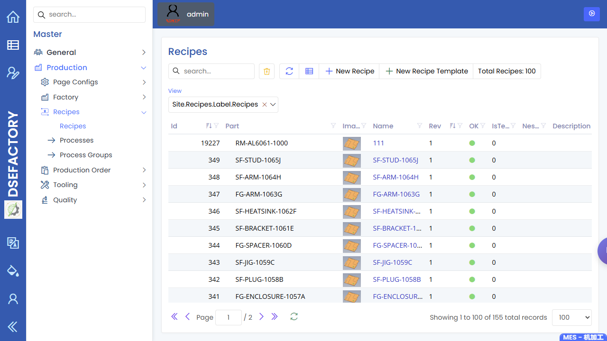

Recipes
Path: Master / Production / Recipes / Recipes URL: <APP_BASE_URL>/Production/Recipes
What This Page Is For
Use Recipes to review the production route or processing setup that supports a planned item. Planners depend on this page being ready before work orders are generated or released.
What You See
- A recipe list with identifying fields, status, and related production setup.
- Search and filter controls for finding the right recipe.
- Toolbar actions for creating, editing, refreshing, exporting, and opening records when available.
- Detail forms or related views that show the selected recipe setup.
What You Do
- Search for the part, recipe name, or route used in the workflow.
- Open the recipe and review visible operation or process information.
- Confirm the recipe is active and suitable for the planned work.
- Compare the recipe with BOM, machines, and NC program readiness before release.
What To Check
- The recipe belongs to the intended item or route.
- Process steps and visible status are ready for planning.
- Machine or group expectations are consistent with the schedule.
- Engineering review is complete before the planner proceeds.
Common Issues
| Issue | What it means |
|---|---|
| Recipe is missing | The item may not be ready for work-order generation. |
| Recipe is inactive or unclear | Engineering should review before release. |
| Recipe does not match BOM or machine setup | Resolve the setup mismatch before use. |
Related Pages
Screenshot
